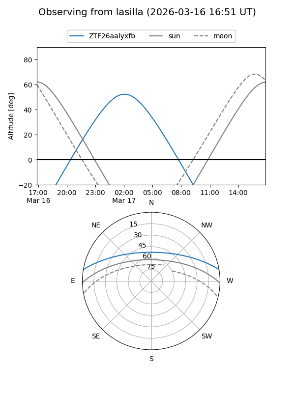
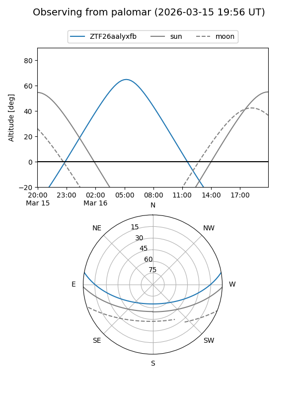

ZTF26aalyxfb
Target ZTF26aalyxfb at 2026-03-16 09:50
Aliases and brokers:
FINK: link
Lasair: link
ALeRCE: link
alt names
ZTF26aalyxfb (ztf,fink_ztf)
Coordinates:
equatorial (ra, dec) = 134.4086,+8.43874
equatorial (HMS+DMS) = 08:57:38.07,+08:26:19.48
galactic (l, b) = (220.0585,+31.83962)
Flags:
Photometry:
last ztfg=17.27
1 ztfg detections
Lightcurve
Visibility


Additional plots